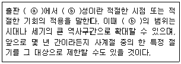
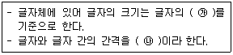

전자출판기능사 (2015-07-19 기출문제)
1과목: 출판론
1. 컴퓨터 그래픽을 응용하여 사진 제판에서 문자, 사진, 도형 등의 합성 및 페이지 레이아웃 기능을 가진 컬러화상처리시스템을 무엇이라고 하는가?
- CTP
- CPU
- CEPS
- TEPS
(정답률: 55%)

2. 다음 중 출판물 유통에서 판매시점정보관리를 의미하는 용어는?
- POS
- EDI
- KDC
- ISSN
(정답률: 82%)
3. 다음 중 출판기획의 방향으로 가장 바람직하지 않는 것은?
- 출판 기획 시 시대의 현실을 감안하여 기획한다.
- 세계화 지향을 위해서 영어·영문표기의 출판물을 개발하고 다양화한다.
- 전자방식에 의한 매체들을 출판 영역으로 적극 끌어들여 출판물을 제작한다.
- 좋은 책보다는 주로 많이 팔리는 책에 우선을 두어 보급 성과에 따른 책을 출판한다.
(정답률: 85%)
4. 1930년경에 고안된 방식으로 종이를 중첩시켜 보내므로 고속 오프셋 매엽 인쇄기에 많이 사용되는 급지 방식은?
- 스트림 급지
- 덱스터 급지
- 회전식 급지
- 유니버설 급지
(정답률: 55%)
5. 다음 중 출판물 제책의 종류가 아닌 것은?
- 양장
- 접장
- 무선철
- 호부장
(정답률: 72%)
6. 어떤 특정한 일을 대상에 적용할 때 그에 걸맞은 정도를 의미하는 것으로, 창의의 결과를 어떻게, 어떠한 대상에 적용할 것인가를 판단하는 요건이 되는 것은?
- 적의성
- 적응성
- 적시성
- 채산성
(정답률: 66%)
7. 다음 중 속장과 겉장을 연결하기 위한 제책공정은?
- 재단
- 접지
- 장합
- 면지붙이기
(정답률: 58%)
8. 다음 중 평판 다색 인쇄에서 각 판의 스크린각도 불량으로 주로 발생하는 문제점은?
- 유화
- 무아레
- 색바램
- 뉴튼링
(정답률: 67%)
9. 다음 중 평판 인쇄용 PS판의 특징과 관계가 없는 것은?
- 품질이 안정적이다
- 해상력이 우수하다
- 암반응이 많이 일어난다.
- 제판 설비공정이 간단하다.
(정답률: 66%)
10. 서점관리에 있어서 반품조건부 위탁판매제도에 관한 설명으로 적합하지 않은 것은?
- 서점은 자기비용으로 광고·선전을 하지 않는다.
- 서점은 위탁받은 출판물에 대한 위험 부담이 없어 적극적으로 판매를 한다.
- 반품조건부라는 거래조건으로 인해 위탁기간이 오래된 중고도서도 회수 요구 시 회수할 수밖에 없다.
- 서점의 전시공간이 부족하고 반품이 자유롭다는 거래조건 때문에 잘 안 팔리는 도서를 빨리 반품시킨다.
(정답률: 52%)
11. 다음 중 출판 기획회의를 할 때 준비할 사항과 가장 거리가 먼 것은?
- 필자 명단
- 예상 독자층 분석
- 유사 도서자료 목록
- 인쇄 제작비 원가 내역
(정답률: 60%)
12. 4·6배판(4·6전지 16절)의 책 160쪽을 총 10000부 인쇄하려고 한다. 손지율이 5%라고 한다면 필요한 4·6전지의 종이량은 얼마인가?
- 50연
- 74연
- 82연
- 1⑤연
(정답률: 51%)
13. 국제표준도서번호(ISBN)의 구조(단계)를 바르게 나타낸 것은?
- 체크번호-서명인식번호-발행자번호-국별번호
- 국별번호-발행자번호-서명인식번호-체크번호
- 발행자번호-국별번호-체크번호-서명인식번호
- 서명인식번호-체크번호-국별번호-발행자번호
(정답률: 80%)
14. 다음 중 출판에 관한 용어의 정의로 옳지 않은 것은?
- ”출판사”란 출판을 업으로 하는 물적 시설만을 말한다.
- ”간행물”이란 종이나 전자적 매체에 실어 읽거나 들을 수 있게 만든 것으로 저자, 발행인 발행일 등을 표시한 것을 말한다.
- ”출판”이란 저작물 등을 종이나 전자적 매체에 실어 편집·복제하여 간행물(전자적 매체를 이용하여 발행하는 경우에는 전자출판물만 해당한다)을 발행하는 행위를 말한다.
- ”전자출판물”이란 관련법에 따라 신고한 출판사가 저작물 등의 내용을 전자적 매체에 실어 이용자가 컴퓨터 등 정보처리장치를 이용하여 그 내용을 읽어 보거나 들을 수 있게 발행한 전자책 등의 간행물을 말한다.
(정답률: 74%)
15. 다음 중 출판의 기능으로 볼 수 없는 것은?
- 독자의 논리적 사고를 유발시킨다.
- 보다 심층적인 정보와 지식을 제공한다.
- 시간과 공간을 초월하여 선택적으로 이용할 수 있다
- 고급문화가 아니라 대중문화만을 형성하고 전파하여 보존한다.
(정답률: 75%)
16. 다음 중 조선시대에 중앙정부나 지방정부에서 만들어내는 출판물을 무엇이라고 하는가?
- 방각본
- 사찰판본
- 관판본
- 서원판본
(정답률: 61%)
17. 단행본에서 가로 짜기를 할 경우 독자가 특정부분을 찾는데 편리하도록 하기 위해 페이지 판면의 꼭대기에 실은 표제이며, 신문이나 잡지에서는 기사의 처음에 내세우는 큰 제목을 무엇이라 하는가?
- 주(note)
- 캡션(caption)
- 헤드라인(headline)
- 일러두기(explanatory notes)
(정답률: 86%)
18. 그라비어인쇄는 판의 전면에 잉크를 과량으로 묻혀 여분의 잉크를 긁어내는 방식을 사용하고 있는데 다음 중 이때 여분의 잉크를 긁어내기 위해서 사용되는 것은?
- 커터
- 글리퍼
- 몰턴
- 독터블레이드
(정답률: 54%)
19. 다음 중 그라비어 제판에서 오목한 셀(cell)을 만들 때 사용되는 대표적인 스크린은?
- 실크 스크린
- PAD 스크린
- 백선 스크린
- 볼록판 스크린
(정답률: 43%)
20. 다음 중 제지 공정을 올바르게 나열한 것은?
- 비팅→충전→코팅→사이징→초지→윤내기
- 비팅→사이징→충전→초지→코팅→윤내기
- 초지→충전→비팅→사이징→코팅→윤내기
- 초지→사이징→코팅→충전→비팅→윤내기
(정답률: 47%)
2과목: 전자 출판
21. 다음 중 전산편집 작업의 최종결과물이 인쇄물에서 모니터나 컬러 프린터 등 모든 컬러 출력장치를 인쇄색상과 일치하도록 하는 작업을 무엇이라 하는가?
- 셋업(setup)
- 인스톨(install)
- 어태치먼트(attachment)
- 캘리브레이션(calibration)
(정답률: 84%)
22. 다음 중 전산편집 작업에 주로 사용하는 프로그램은?
- 드림위버
- 퀵익스프레스
- 파워포인트
- 프론트페이지
(정답률: 80%)
23. 본문의 등쪽을 접는 공정에서 슬릿(slit) 또는 슬롯(slot) 형태의 구멍을 내고, 이 부분에 접착제를 침투시켜 책의 속장을 고정시키는 제책방식은?
- 미싱매기
- 철사매기
- 무선매기
- 아지노매기
(정답률: 46%)
24. 다음 중 전자출판물을 제작할 때 가장 많은 내용을 저장할 수 있는 매체는?
- DVD
- jaz 디스크
- CD RW
- zip 디스크
(정답률: 57%)
25. 다음 중 온라인 전자출판(전자통신출판)의 중심매체로 발전하고 있는 것은?
- CD-ROM
- DVD-ROM
- WYSIWYG
- INTERNET
(정답률: 63%)
26. 매킨토시의 프로그램 중 페이지 레이아웃(page layout)과 가장 관계 깊은 프로그램은?
- 포토샵
- 디지털 다크룸
- 퀵익스프레스
- 일러스트레이터
(정답률: 72%)
27. 다음 중 전자출판물에 해당되지 않는 것은?
- 웹진
- 종이책
- e-book
- 시디롬(CD-ROM)
(정답률: 79%)
28. 다음 중 전통적 출판과 전자출판의 달라진 점으로 가장 적절한 것은?
- 제작과정에서만 많은 변화가 있을 뿐이다.
- 전통적 출판과 전자출판은 본질적으로 의미가 다르다.
- 컴퓨터의 활용으로 출판의 제작·유통과정에 많은 변화가 생겼다.
- 아날로그 방식과 디지털방식의 차이이므로 출판의 개념이 서로 다르다.
(정답률: 79%)
29. 중앙처리장치(CPU)의 구성요소가 아닌 것은?
- 기억장치
- 연산장치
- 제어장치
- 출력장치
(정답률: 78%)
30. PDF파일로 만든 자료를 보기 위하여 반드시 필요한 프로그램은?
- 3D MAX
- FLASH
- DREAMWEAVER
- ACROBAT READER
(정답률: 71%)
31. 전자출판물의 특성으로 옳지 않은 것은?
- 네트워크상으로만 유통된다.
- 종이책에 비해 보관이 용이하다.
- 타 매체에 대한 적응력이 우수하다.
- 정보를 해독할 수 있는 장치가 있어야 한다.
(정답률: 64%)
32. 주로 글씨나 그림, 사진, 필름 등의 이미지나 문서를 디지털 신호로 변환하여 컴퓨터에 전송하는 입력 장치는?
- 태블릿
- 스캐너
- 레코더
- 디지털 카메라
(정답률: 85%)
33. 출판물의 일반적 판형으로 적절하지 않은 것은?
- 잡지 → 국배판
- 주간신문 → 타블로이드
- 소설책, 수필집 → 신국판
- 교과서, 대학교재, 노트 → 4X6배판
(정답률: 46%)
34. 일반적으로 종이책과 모니터의 시지각적 정보표현을 비교하였을 때 옳지 않은 것은?
- 종이책은 RGB로 색상을 표현하지만 모니터는 CMYK로 색상을 표현한다.
- 종이책은 정보가 지면에 고착되어 있지만 모니터는 화면상에 정보가 유동적으로 표현된다.
- 종이책은 대부분 표시면이 상하로 긴 사각 형태이며, 모니터는 표시면이 좌우로 긴 사각 형태이다.
- 종이책은 좌우로 페이지를 넘기면서 정보를 확인하지만 모니터는 상하로 스크롤하면서 정보를 확인한다.
(정답률: 77%)
35. 전자출판에 대한 설명으로 옳지 않은 것은?
- 오늘날의 전자출판은 컬러사진의 제판통합처리, 데이터베이스 자료를 이용한 출판 등 출판인쇄공정 전반으로 전산화 영역을 넓혀 가고 있다.
- 출판산업의 대형화 추세와 함께 전자출판분야는 방송, 통신 등의 다른 매체와 명확하게 분리되어 독자적인 영역을 구축하는 경향을 보이고 있다.
- 전자출판시스템은 판형설정이나 레이아웃, 페이지 처리 등을 자동으로 할 수 있고, 그림이나 사진도 자유자재로 확대 또는 축소하여 원하는 위치에 넣을 수 있는 장점이 있다.
- 한국에서는 1980년대 초 전산 사식 시스템(CTS: computerized typesetting system)을 도입하여 기존의 활판인쇄를 대체하며 조판을 전산화한 것을 전자출판의 시초로 볼 수 있다.
(정답률: 58%)
36. 전자책(e-book)의 특징을 바르게 설명한 것은?
- 전용 단말기가 필요 없다.
- 기획비용이 거의 들지 않는다.
- 종이책에 비해 포장이나 유통비용이 적게 든다.
- 종이책과 달리 밑줄을 긋는 표시를 할 수 없다.
(정답률: 80%)
37. 전자책 보편화를 위해 해결되어야 하는 문제가 아닌 것은?
- 종이책 가격이 더 싸져야 한다.
- 무단복제를 막는 보안기술이 필요하다.
- 유비쿼터스 환경이 더욱 보편화되어야 한다.
- 전자책을 제작하는 프로그램이 개발되어야 한다.
(정답률: 83%)
38. 다음 중 전자책의 문서포맷이 아닌 것은?
- HWP
- SWF
- XML
(정답률: 52%)
39. 전자출판에 관한 설명으로 적절하지 않은 것은?
- CD나 DVD와 같은 디지털 저장매체에 수록하여 배포한다.
- 디지털 저장매체를 통한 대량복제를 하여 판매할 수 있다.
- 출판물의 형태를 가져야 함으로 인쇄매체로 만들어져야 한다.
- 케이블 또는 공중파를 이용한 인터넷이나 지역 네트워크를 통해 정보를 배포하기도 한다.
(정답률: 76%)
40. 비종이책 전자출판의 특징을 가장 바르게 설명한 것은?
- Flash 등을 이용한 애니메이션을 만들 수 있다.
- DTP시스템을 이용하여 신문조판까지 할 수 있다.
- 대용량 저장 매체인 CD-ROM Disc에 영화 음악 등을 담을 수 있다.
- 종이책의 내용을 디지털로 하이퍼링크를 할 수 있으며 동영상과 음악 등도 책의 내용에 함께 실어, 종이책의 한계를 넘어 설 수 있다.
(정답률: 69%)
3과목: 전산 편집
41. 글꼴에 관한 설명으로 옳지 않은 것은?
- 글꼴의 기본 측정단위는 포인트(point)이다.
- 세리프체의 대표적인 글꼴은 헬베티카(Helvetica)이다.
- 세리프는 영문 글꼴에서 끝 부분에 붙은 돌기를 의미한다.
- 영문자 소문자의 높이를 형성하는 것을 엑스하이트(x-height)라고 한다.
(정답률: 65%)
42. 오버프린트나 녹아웃의 개념과 관계가 깊은 용어는?
- 교정
- 소부
- 터잡기
- 트랩(트래핑)
(정답률: 72%)
43. ( ) 안의 ⓐ와 ⓑ에 들어갈 용어로 옳은 것은?

- ⓐ기획, ⓑ적의
- ⓐ제작, ⓑ창의
- ⓐ기획, ⓑ적시
- ⓐ유통, ⓑ적응
(정답률: 74%)
44. 여러 가지 오류를 예측하고 예방하기 위하여 교정을 하는데 다음 중 글자교정에 해당되는 사항은?
- 필드(field)
- 여백(margin)
- 단간(column space)
- 맞춤법(orthography)
(정답률: 80%)
45. 다음 중 판형에 대한 설명으로 옳지 않은 것은?
- 판형은 크게 표준판형과 변형판형으로 나눈다.
- A4판형은 국전지를 4절 크기로 잘라 만든 판형으로 크기는 148x210㎜이다.
- B4판형은 타블로이드 판형이라고도 한다.
- B5판형은 4x6배판형이라고도 하며, 크기는 188x257㎜정도이다.
(정답률: 71%)
46. 일반적인 잡지본문 사진의 시선흐름에 대한 설명으로 옳지 않은 것은?
- 작은 사진에서 큰 사진으로
- 위쪽 사진에서 아래쪽 사진으로
- 왼쪽 사진에서 오른쪽 사진으로
- 밝은 사진에서 어두운 사진으로
(정답률: 68%)
47. 다음 ( )안의 ㉮, ㉯에 들어 갈 적당한 용어는?

- ㉮두께, ㉯행간
- ㉮두께, ㉯자간
- ㉮가로·세로의 길이, ㉯행간
- ㉮가로·세로의 길이, ㉯자간
(정답률: 80%)
48. 어린이 그림책을 아트지에 인쇄하려고 할 때 다음 중 가장 적합한 이미지의 해상도는?
- 60dpi
- 100dpi
- 120dpi
- 300dpi
(정답률: 74%)
49. 광고, 브로슈어, 정기간행물 등의 평면을 특정한 형태로 정리함으로써 본문, 사진, 일러스트레이션 등을 객관적이고 기능적인 기준에 의해서 조화롭게 디자인하기 위해서 일정한 간격으로 수평, 수직선을 그어 만든 격자형의 체계는?
- 코팅시스템
- 그리드시스템
- 인스톨시스템
- 황금분할시스템
(정답률: 81%)
50. 교정에 관한 설명으로 옳지 않은 것은?
- 뜻이 틀린 문장을 고치는 것이다.
- 붉은색 사인펜이나 볼펜 등을 사용한다.
- 틀리거나 잘못된 글자를 바로 고치는 것이다.
- 사전류는 재교(2차 교정) 정도로 끝내는 것이 일반적이다.
(정답률: 63%)
51. 많은 양의 본문에서 크기가 지나치게 크거나 작은 글자는 독자들의 눈을 금방 피로하게 하여 싫증을 느끼게 한다. 일반 성인을 대상으로 한 책의 경우 바람직한 본문 글자의 크기는?
- 4~7point
- 9~12point
- 13~24point
- 25~32point
(정답률: 82%)
52. 전산 편집된 내용을 프린트를 통해 교정할 때 프린트 교정 요소와 가장 거리가 먼 것은?
- 색상의 교정
- 면주와 쪽 숫자의 교정
- 용지의 백색도, 평활도 교정
- 틀리거나 에러가 발생한 문자의 교정
(정답률: 50%)
53. 다음 중 그 획이 가장 굵은 서체는?
- 세명조체
- 중명조체
- 태명조체
- 견출명조체
(정답률: 60%)
54. 다음 중 색료혼합에서 1차색에 해당하는 것은?
- Red
- Green
- Blue
- Yellow
(정답률: 66%)
55. 다음 중 WYSIWYG에 대한 설명으로 가장 적합한 것은?
- CTS는 모두 WYSIWYG 방식으로 운용된다.
- What You Screen Is Where You Get
- 도트 매트릭스 프린터로도 미려한 결과물을 볼 수 있다.
- 모니터 상에서 완성된 레이아웃을 보이는 대로 프린터로 출력할 수 있다.
(정답률: 70%)
56. 다음 중 서로 가장 보색 관계에 있는 색은?
- 노랑(Y) – 녹색(G)
- 보라(P) – 파랑(B)
- 빨강(R) – 청록(BG)
- 연두(GY) – 파랑(B)
(정답률: 78%)
57. 다음 중 국판전지(원지) 한 장으로 32면이 만들어지는 판형은?
- 국판
- 국배판
- 사륙판
- 사륙배판
(정답률: 31%)
58. 다음 중 책의 편집 요소인 행수(글줄의 수)를 결정하는 요인과 가장 거리가 먼 것은?
- 글자의 모양
- 아래의 여백
- 글줄의 간격
- 글자의 크기
(정답률: 53%)
59. 크기가 1인치X1인치인 이미지를 300% 확대하여 240lpi로 인쇄하기 위하여 필요한 입력 해상도는 몇 ppi인가? (단, 망점계수는 1.5이다.)
- 360
- 1080
- 48000
- 108000
(정답률: 53%)
60. 먼셀표색계에서 10색상을 기본으로 할 때 5R은 빨강이다. 그렇다면 10R은 무슨 색에 가장 가까운가?
- 다홍
- 주황
- 연지
- 자주
(정답률: 46%)